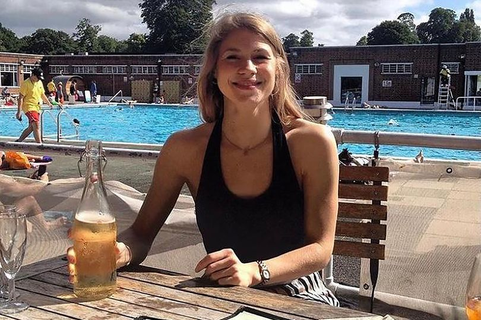

What happened to Sarah Everard? Remembering her five years on

Sarah Everard was 33 when she was kidnapped and murdered while walking home in South London on the evening of March 3, 2021. Her death shocked the city and the country, sparking a conversation about the everyday dangers women face and the trust placed in institutions meant to protect them. And five years on today since her death, her name has not been forgotten.
Sarah could have been any Londoner: a friend, a sister, a colleague, or someone you pass on your morning coffee run. That universality turned her name into a rallying cry for women’s safety across the UK. Here, we look back on who Sarah was, what unfolded in the aftermath of the case – and whether anything has changed in the fight to prevent violence against women.
Remembering Sarah Everard -Credit:PA Media
Sarah was more than just what happened to her. She was a marketing executive from Yorkshire. She grew up in York and attended Fulford School, before studying Human Geography at St Cuthbert’s Society, Durham University, from 2005 to 2008.
She had moved to London and made it her own. She lived in Brixton, loved dancing, was saving to buy her first home. She had a boyfriend, a close-knit group of friends, a brother and sister she adored, parents who described her with a kind of boundless pride. She was, by every account, warm, funny, principled, and full of plans.
On the night of 3 March 2021, she walked home from a friend’s house in Clapham. She never arrived.
The man who took her was Wayne Couzens – a 48-year-old Metropolitan Police officer who used his warrant card and a lie about Covid rules to kidnap her on a South London street. What he did, and the fact that the institution meant to protect Londoners had employed and enabled him, shook this city and the country in ways that are still being felt today.
Her mother described her in a statement that silenced a courtroom: “She was caring, she was funny. She was clever, but she was good at practical things too. She was a beautiful dancer. She was always there to listen, to advise, or simply to share the minutiae of the day. She was a strongly principled young woman who knew right from wrong and who lived by those values. She was a good person. She had purpose to her life.”
Her school, Fulford School, released a statement at the time of her disappearance saying: “Sarah was a vibrant, caring and much valued member of our school community. Her joy, intelligence and positive spirit shone within the school. She was a lovely pupil and friend.”
What happened to her
It was an ordinary Wednesday evening. Sarah had spent it at a friend’s flat on Leathwaite Road, Clapham, sharing a bottle of red wine she’d bought in the Sainsbury’s on the way. She left just after 9pm, setting off on the 50-minute walk home along the South Circular, across Clapham Common.
She called her boyfriend as she walked. They talked for about 15 minutes – made plans for the next day, he later said she seemed happy. The call ended at 9.28pm. It was the last time anyone heard from her.
By the following morning her friends were frightened. She hadn’t texted to say she’d arrived home — something she always did. She missed a work meeting. Her boyfriend’s messages went unread. That evening, he went to her flat and got no answer. He called the police.
The search
What followed was a massive public hunt. Police visited 750 homes and received 100 calls. Search and rescue teams combed Clapham Common, nearby ponds, parks and gardens. Sarah’s friends plastered Clapham with posters. Her face circulated across social media — a young woman with an open smile that seemed to radiate warmth – shared by strangers who didn’t know her but felt, somehow, that they did.
Her family made public appeals, barely holding it together. “She’s absolutely amazing,” her cousin told us. “So sensible, so well-loved by her family, by her friends, by everyone. We just need to get her home.”
The scale of the response reflected something many people already sensed: that Sarah had not vanished willingly. That something terrible had happened. They were right.
What happened on Poynders Road
Footage from multiple dashcams and a passing bus captured the moment Sarah disappeared. At 9.34pm – just six minutes after her phone call ended — she was standing on Poynders Road beside a white hire car. A man was with her. He had shown her his Metropolitan Police warrant card and told her she was under arrest for breaching Covid restrictions. She sat down on the pavement to be handcuffed. A passing car slowed to watch the arrest.
It was not an arrest. It was a kidnap.
The man was Wayne Couzens, a 48-year-old serving Metropolitan Police officer. He drove Sarah 80 miles to woodland in Kent. He raped and strangled her. He burned her body and dumped her remains in a pond in a builder’s bag. In the hours afterwards, he stopped at a service station to buy apple juice, water and Lucozade. He went to a Costa. He called a vet about his dog.
Sarah was found on 10 March. She had to be identified by dental records.
Handout CCTV dated 03/03/21 issued by the Metropolitan Police of Wayne Couzens speaking to Sarah Everard by the side of the road in Poynders Court, south London -Credit:PA
The arrest
On 9 March, police arrived at Couzens’ home in Deal, Kent, and arrested him on suspicion of kidnapping. He sat handcuffed in an armchair and denied knowing Sarah or having anything to do with her disappearance.
Later, he tried a different story. He was in financial trouble, he said. A gang had “leant on” him to pick up women. He’d taken Sarah and handed her over. She was alive when they drove off.
It was — as the judge would later make plain – a complete fabrication. Couzens had planned it. He had hired the car specifically. He had researched how to use Covid rules to stage a fake arrest. He had targeted a lone woman walking home at night.
He pleaded guilty to Sarah’s kidnapping and rape on 9 June 2021. On 9 July, he admitted her murder.
Wayne Couzens murdered marketing executive Sarah Everard in March 2021 -Credit:PA Media/Metropolitan Police
The question that still demands an answer
Three weeks before he killed Sarah, Couzens had driven to a McDonald’s Drive-Thru in Swanley, Kent, ordered food, and exposed himself to the female member of staff at the hatch. It wasn’t the first time he had done it to her, she said. She reported it. Police took her statement, collected CCTV footage, identified the car. Days before Sarah’s murder, officers were still gathering evidence about that incident.
Couzens’ colleagues in the Met had a nickname for him. They called him “the rapist”. There had been an indecent exposure allegation in 2015. He had taken prostitutes to police events. None of it had ended his career. None of it had taken his warrant card. He was still a serving officer when he used that card to kill Sarah Everard.
The news broke across London and the world over the following days. A young woman had been abducted, raped and murdered — by a police officer, using his police powers to do it.
Women began talking. About walking home with keys between their knuckles. About running routes abandoned after dark. About the check-in texts sent to friends that meant I got back safe . About every time they’d crossed the road, or pretended to be on the phone, or clocked a man behind them and quickened their pace.
“What stops it from being me?” one woman who attended the vigil told us. “What stops it from being anyone I love?”
The vigil and what the police did
Floral tributes left to Sarah Everard at the Clapham Common bandstand -Credit:Daily Star
On 13 March, thousands came to Clapham Common bandstand to remember Sarah. The vigil had been organised by a newly-formed group, Reclaim These Streets, with the aim of giving women somewhere to grieve together. With Covid restrictions still in force, organisers promised distancing, masks, and full cooperation with police.
Hours before it was due to begin, the Met threatened organisers with fines if it went ahead. The vigil was officially cancelled. Around 1,500 people came anyway, with flowers, candles, handwritten signs. The Duchess of Cambridge came quietly and left a tribute among the growing mass of flowers at the bandstand.
It started in silence.
Then police moved in. Officers surrounded the bandstand and tried to remove those who had gathered. Male officers grabbed women and led them away in handcuffs, trampling the flower tributes as they went. Nine people were arrested. A photograph of student Patsy Stevenson being pinned to the ground by a male officer – at a vigil for a woman killed by a police officer — appeared on front pages around the world.
“It was devastating,” said vigil organiser Jamie Klingler. “Watching men – especially police – kneel on the backs of women at a vigil about police killing a young woman.”
Chants of we will not be silenced echoed across the Common as darkness fell.
A parliamentary inquiry later found the policing of the vigil had breached fundamental rights to public protest. The Met said it had reviewed its actions and found no recommendations for doing things differently.
The sentencing
The sentencing hearing at the Old Bailey took a day and a half. Sarah’s family – her parents Susan and Jeremy, her sister Katie — sat through all of it. The CCTV of her last movements. The details of what he did to her. The timeline of the hours afterwards. They did not look away.
When they spoke, the public gallery was in tears.
Her father Jeremy stood and addressed Couzens directly. “Please look at me,” he said. Couzens raised his head.
“The impact of what you have done will never end. The horrendous murder of my daughter is in my mind all the time and will be for the rest of my life. A father wants to look after his children and fix everything – and you have deliberately and with premeditation stopped my ability to do that.”
Her sister Katie spoke of what had been stolen. Not just Sarah’s life, but everything that would have come after it: the trips abroad they’d planned, being each other’s bridesmaids, the nieces and nephews who would never be born. “How dare you take her from me,” she said. She added: “We had to go to the flat and pack up Sarah’s whole life – washing left hanging up, half-sewn outfits, deliveries waiting to be returned, packages waiting at the door ready to be opened.
“All signs of a life waiting to be lived, chores to be done, ready for her to return and continue when she got home. But she never got home because a predator – you – was on the loose. Prowling the streets for hours looking for his prey.”
Her mother Susan addressed Couzens last. “He treated my daughter as if she was nothing and disposed of her as if she was rubbish. Burning her body was the final insult — it meant we could never again see her sweet face and never say goodbye.”
On 1 October 2021, Wayne Couzens was handed a whole life sentence; the first time it had ever been imposed for a single murder of an adult not carried out as part of a terror attack. He will die in prison.
Sarah Everard’s name became a rallying cry -Credit:mirrorpix
What came after – five years on
The fallout from Sarah’s murder has been vast, and, campaigners argue, still nowhere near enough. As the details of the case emerged, public trust in the Metropolitan Police, already shaken, collapsed. The Met’s advice to women concerned about a police officer — flag down a bus — was met with fury. Met Commissioner Cressida Dick resigned in early 2022.
And the officer who hid in plain sight – who exposed himself weeks before he killed her — turned out not to be an anomaly. David Carrick, another serving Met officer, was unmasked as a serial rapist who had offended for nearly two decades. Others took photographs of murdered sisters Nicole Smallman and Bibaa Henry at a crime scene. A report into Charing Cross police station exposed an institutional culture of misogyny: messages between officers included “I would happily rape you” and jokes about domestic abuse.
In the year after Sarah’s death, 125 more women were killed in the UK. In 2023, the Casey Review, commissioned by the Met in the immediate aftermath of her death, concluded that the force was institutionally racist, homophobic and misogynist, and warned there could be more officers like Couzens in its ranks. At the time of the report, more than 1,000 Met officers were suspended or on restricted duties while under investigation for corruption or misconduct, including sexual offences and domestic abuse.
The following year, the Angiolini Inquiry — a formal public inquiry into how Couzens had been allowed to remain a serving officer – delivered a damning verdict. Three separate police forces had failed to identify clear signals of his unsuitability. Couzens had a history of viewing extreme and violent pornography and alleged sexual offending stretching back nearly two decades. The inquiry warned there was “nothing to stop another Couzens operating in plain sight” without a radical overhaul of policing culture.
A second report published in December 2025 found that efforts to prevent sexually motivated crimes against women are “uncoordinated, short-term and under-resourced”. It also found that a quarter of police forces still lacked even basic policies on sexual offences committed by their own officers.
In the year ending March 2025, police in England and Wales recorded 209,079 sexual offences, which equates to approximately 572 per day, according to ONS data.
But the Angiolini inquiry found that preventing violence against women and girls is a “whole-society issue,” not just a policing problem.
But in the recent words of Gisèle Pelicot: “For victims to be able to speak, society has to be ready to listen.”
MyLondon contacted the Met Police for an interview regarding the progress made in preventing violence against women – they stated that no one was available.
*Looking for more from MyLondon? Subscribe to our daily newsletters here here for the latest and greatest updates from across London.*